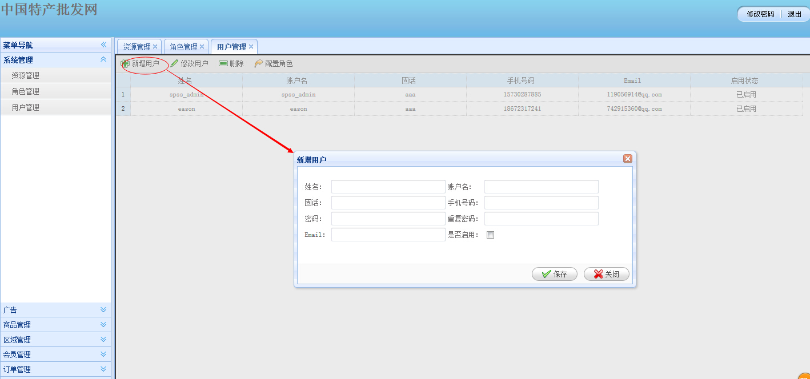
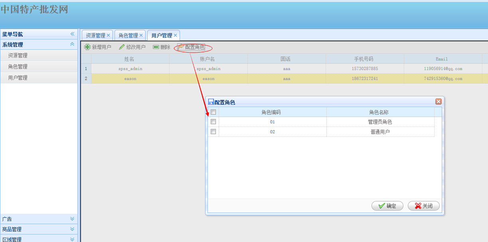
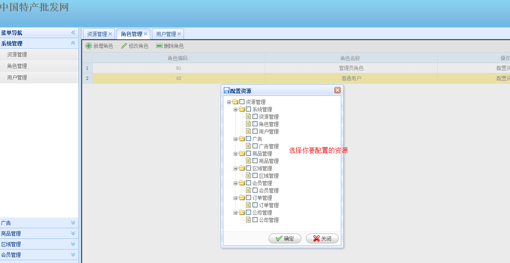
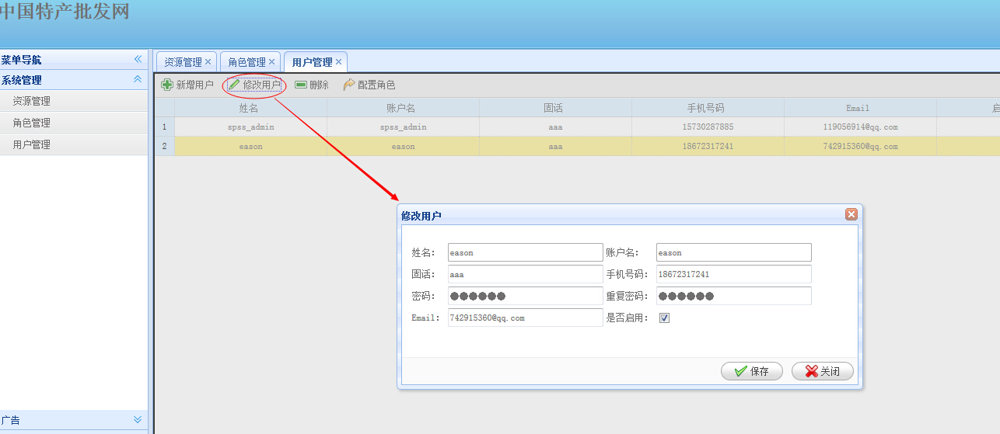

２.１ 用户管理
概述
提供网站主页面的各项信息浏览 新建用户、用户赋权、密码初始化、删除用户,模糊查询等功能
操作
1 spss_admin通过SPSS系统登入【系统管理】后，点击系统管理下的用户管理
操作如下：新建用户，如图所示(*为必填项)

如上图所示,我们就可以新建一个用户（新建角色也是一样类似）.
2.新建用户之后一定要分配角色，角色在关联资源

如上图所示我们就可以为指定的用户赋权（指定角色）.可以点击工具栏【配置角色】按钮

如上图所示我们就可以为指定的用户赋于相关的资源
3.admin登入系统管理后，修改用户 操作如下：如图所示

如上图所示我们就可以修改该用户信息，可以点击右侧相关操作【修改】图标